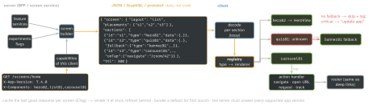

architecture · folio
In one line: The server sends a typed description of a screen — layout + components with their data + actions — and the app renders it with native components it already ships. You gain release independence (change a screen without a store release, run experiments, one backend for iOS/Android/web); you pay with a schema to design, every old app version to keep working, and a weaker compile-time contract. It moves data and composition, never code.
Download PDF Print view LaTeX source


How it works
- How much is driven? A spectrum: flags/config → content (copy, images) → composition (which known sections, in what order, with what data) → primitives (stack/text/image = a browser). Most production systems sit at composition of product-level sections; primitives rebuild HTML with worse tooling.
- Schema: a typed contract with a type discriminator per component (GraphQL union/interface, protobuf
oneof, JSON + JSON Schema); models codegen’d for each client. Data arrives ready to show — translated, localised, formatted — so clients stay dumb. - Layout vs content: the screen says where things go (placements, list/grid, modal vs push); a section carries only its data and knows nothing of the screen, so it can be reused on any screen.
- Registry:
type → renderer; each renderer decodes its own payload, so one malformed section cannot blank the screen. - Versioning: a type’s shape is frozen once shipped; a breaking change is a new type (
hero@2). Only add optional fields. Old app versions live for years — the server must serve all of them. - Capability negotiation: the client sends app version + the component types/versions it renders; the server emits only those, or attaches a
fallback. The client still defends itself: unknown type → fallback → skip + log; unknown action / enum case → no-op default. - Actions are declarative intents, not code:
navigate(route),openURL,request(endpoint, then:),track(event),dismiss,sequence. The client owns execution; routes go through the same router as universal links. Local UI state (toggles, text fields) stays on the client; the server re-validates. - Cache + offline: store the last good response per screen, render it immediately, refresh behind (stale-while-revalidate); ship a bundled default.
- Performance: a round trip before first paint → prefetch, cache, skeletons, paginate sections, stable ids for diffing, decode off main. Big payloads were a named pain point at Airbnb.
- Testing: snapshot every component × fixtures (incl. long text, RTL, Dynamic Type); contract tests on the schema; a compat matrix (oldest supported app × new server response); a preview tool for authors.
- Accessibility: native components keep VoiceOver, Dynamic Type, RTL — a win over web views; the server must still send labels and semantics (heading, button).
When NOT to
Bespoke, animated, gesture-heavy UI (editors, camera, games — coordinated animations were a named limit at Lyft); offline-first core flows; small teams (high upfront cost); a latency-critical first screen with no cache; when a web view would do.
Example — a defensive registry
struct Section: Decodable { let id: String; let type: String
let data: JSONValue; let fallback: [Section]? }
protocol Renderer { static var type: String { get } // "hero@2"
func view(_ data: JSONValue, _ on: ActionHandler) throws -> AnyView }
@MainActor final class Registry {
var renderers: [String: any Renderer] = [:]
var supported: String { renderers.keys.sorted().joined(separator: ",") }
func render(_ s: Section, _ on: ActionHandler) -> AnyView? {
if let r = renderers[s.type], let v = try? r.view(s.data, on) { return v }
if let f = s.fallback?.first { return render(f, on) } // server's plan B
on.log(.unrendered(s.type, s.id)); return nil } // skip, never crash
}
enum Action: Decodable { case navigate(String), openURL(URL),
track(String), unknown } // custom init: unknown keys -> .unknownsupported goes into the capabilities header; the list of sections is decoded
as [Section] with data kept raw, so a bad section fails alone.
App Review — what Apple actually says
- 2.5.2: apps “may not … download, install, or execute code which introduces or changes features or functionality of the app”. SDUI ships data rendered by reviewed native code — that is the defensible line.
- 2.3.1(a): no “hidden, dormant, or undocumented features”; new features described in Review Notes — so a server flag must not switch on something App Review never saw.
- 2.1(a): backend on, demo account ready — review sees the server’s output.
- The license agreement’s executable-code clause allows interpreted code only if it does not change the app’s primary purpose (the basis for JS OTA updates, not SDUI).
Traps
- “SDUI skips App Review” — no: it recombines reviewed features.
- Changing a shipped type’s payload in place → old clients break.
- Strict decode of the whole screen: one unknown case = empty screen.
- Going down to primitives: a browser without the browser’s tooling.
- No cache → spinner on every launch; testing only the newest client.
Remember
Server says what, client owns how. Freeze types, add versions, negotiate capabilities, fall back, never crash.